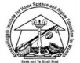
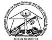

7th International Conference NGNS on
New Generation Digital Systems
NGDS'23
Casablanca-Morocco
13-15 July 2023
After the success of previous editions of NGNS (Six editions organized in Morocco, Tunisia and Portugal), the seventh edition NGDS’23, in Casablanca, comes to confirm the NGDS importance in the scientific research field and the industrial and economic interest. NGDS’23 has as objective to give report of the situation on the present state of research in the domains of digital systems in education, economy, finance and health. It will be an opportunity to develop profitable collaborations and partnerships between researchers, academics, industrials and experts of the field.
CHAIRS
General Chairs
H. Saliah Hassane, Teluq University Montréal
S. Kabbaj, ENCG Casablanca
I. Berrada, ENSIAS Rabat
A. Ibenrissoul, ENCG Casablanca
Program Chairs
A. Berqia, ENSIAS Rabat
N. El Haoud, ENCG Casablanca
Publication Chairs
B. Saber, FSJES Safi
R. Faizi, ENSIAS Rabat
K. Zine-Dine, FSR Rabat
Internationnal Technical Program Committee
Dr. A. ASDIOU, ENCG C
Dr. A. AZMI, ENCG C
Dr. A. BENLAKOUIRI, EST C
Dr. A. BILAMI, BATNA
Dr. A. BOUHOUTE, USMBA
Dr. A. BOULAHOUAL, ENCG C
Dr. A. HAQIQ, UH1
Dr. A. HARRAK, ENCG C
Dr. A. JAMALI, UH1
Dr. A. KOBBANE, ENSIAS
Dr. A. LAMALEM, ENCG C
Dr. A. MENOU, AIAC, RMEIM-M
Dr. A. PANKAJAM, AVINUTY
Dr. A. ZABANIOTOU, RMEIM-M
Dr. B. BOUNABAT, UM5R
Dr. B. SABER, FPS
Dr. C. ABOUNAIMA, UMI
Dr. C. MOUDINE, ENCG C
Dr. D. AIT OMAR, USMS
Dr. D. ELLOUZE, ESC TUNIS
Dr. E. EL MAZOUDI, UCA
Dr. E. S. BENNANI, SMBA
Dr. F. LAKRAMI, FS, UCD
Dr. F. OUHTITA, ENCG C
Dr. F. Z. SOSSI ALAOUI, FEG UIT
Dr. G. BRUNETTO, IAE AIX
Dr. H. EL BAKKALI, ENSIAS
Dr. H. GABER, ENCG C
Dr. H. HAROUD, AUI
Dr. H. MOUATASSIM, ENCG C
Dr. H. ROCHDANE, ENCG C
Dr. H. TERCHOUNE, ESTC
Dr. H. ZIYATI, ESTC
Dr. I. ELAICHE, ENCG-C
Dr. J. AMAHMOUL, ENCG C
Dr. J. ARTHI, AVINUTY
Dr. J. BEN MANSOUR, UQTR
Dr. J. LIMA, UALG
Dr. J. HUSSER, IAE AIX
Dr. K. NAOUI, ESC TUNIS
Dr. K. EL YASSINI, FSM UMI
Dr. M. BELLAFKIH, INPT
Dr. M. BENHRIMIDA, ENCG C
Dr. M. CHERGUI, ENSEM
Dr. M. EL GHOUMARI, ENCG C
Dr. M. El ANSARI, UMI
Dr. M. El KAMILI, ESTC
Dr. M. ESSAIDI, EMSI
Dr. M. ET-TOLBA, INPT
Dr. M. IAOUSE, UH2C
Dr. M. MOUGHIT, ENSA K
Dr. M. RAFI, AIAC
Dr. M. ZBAKH, ENSIAS
Dr. M. BAKHOUYA, UIR
Dr. N. IBENRISSOUL, ENCG C
Dr. N. IDBOUFKKER, UCA
Dr. P. CHITRAMANI, AVINUTY
Dr. P. STTALINGA, UALG
Dr. R. AALLALI, ENCG C
Dr. R. EL OUAHBI, UMI
Dr. R. GUATI, ENCG C
Dr. R. SAADANE, EHTP
Dr. R. VERDE, UNICAMPANIA
Dr. S. AOUAD, ENSIAS
Dr. S. EL MOUKHLIS, AIAC
Dr. S. HAMDANI, ENCG C
Dr. S. JABRAOUI, ENCG C
Dr. S. JUIDETTE, ENCG C
Dr. S. KORICHI, ENCG C
Dr. S. OUALIL, MVI POLYTECHNIC
Dr. S. OUYA, ESP
Dr. S. ZOUITEN, UQTR
Dr. T. KASBAOUI, ENCG C
Dr. T. S. NOMO, UQTR
Dr. T. ZINAOUI, ENCG C
Dr. V. GIANUZZI, GENOVA
Dr. V. MONCADA, IAE-AIX
Dr. Y. MEJDOUB, ESTC